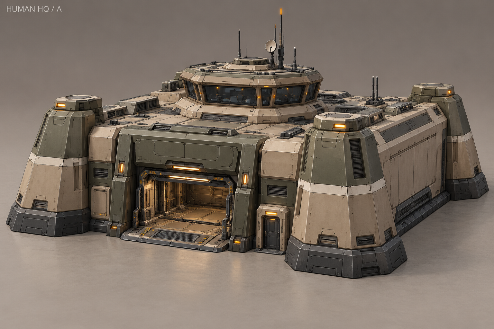
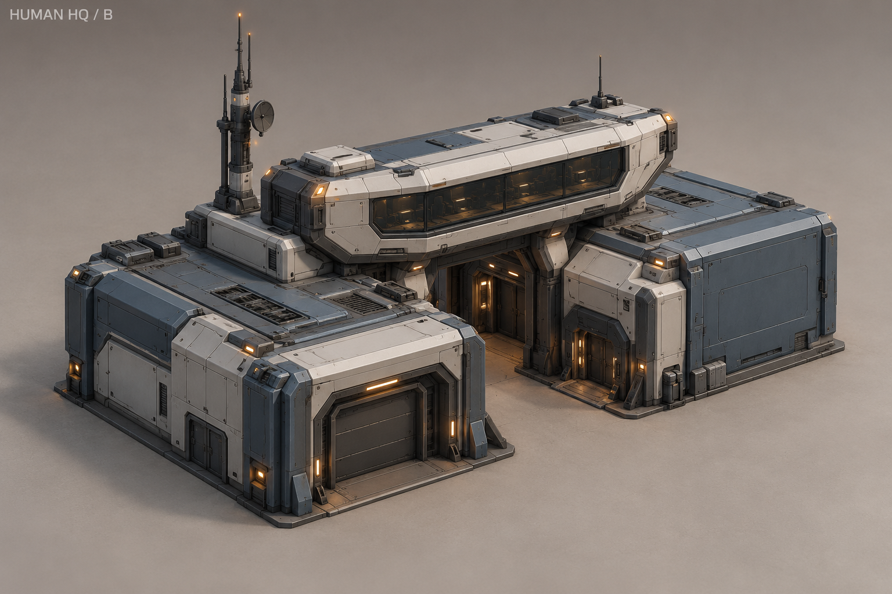
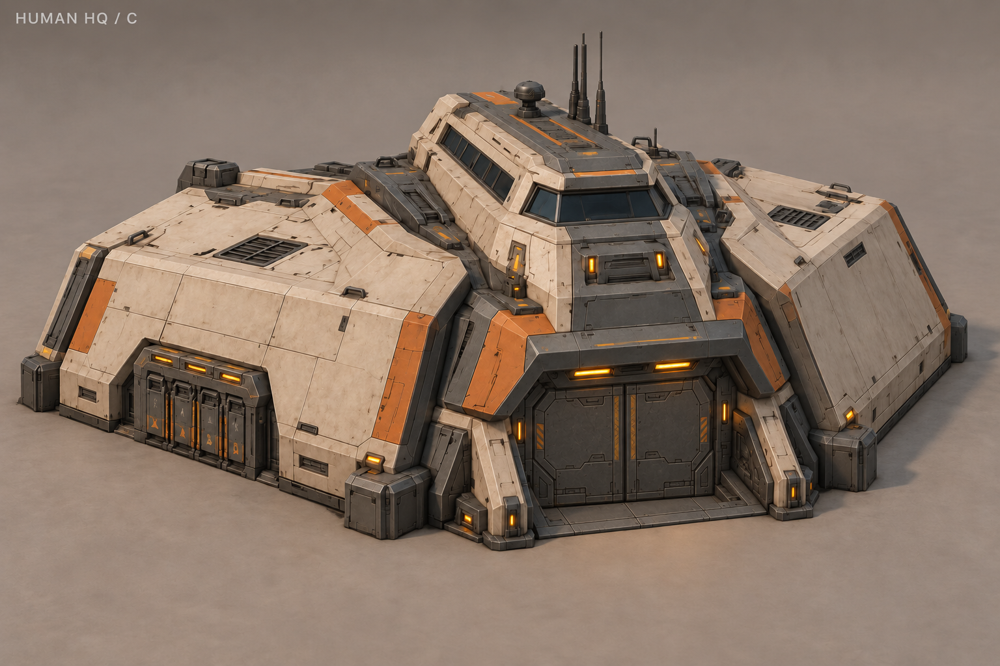
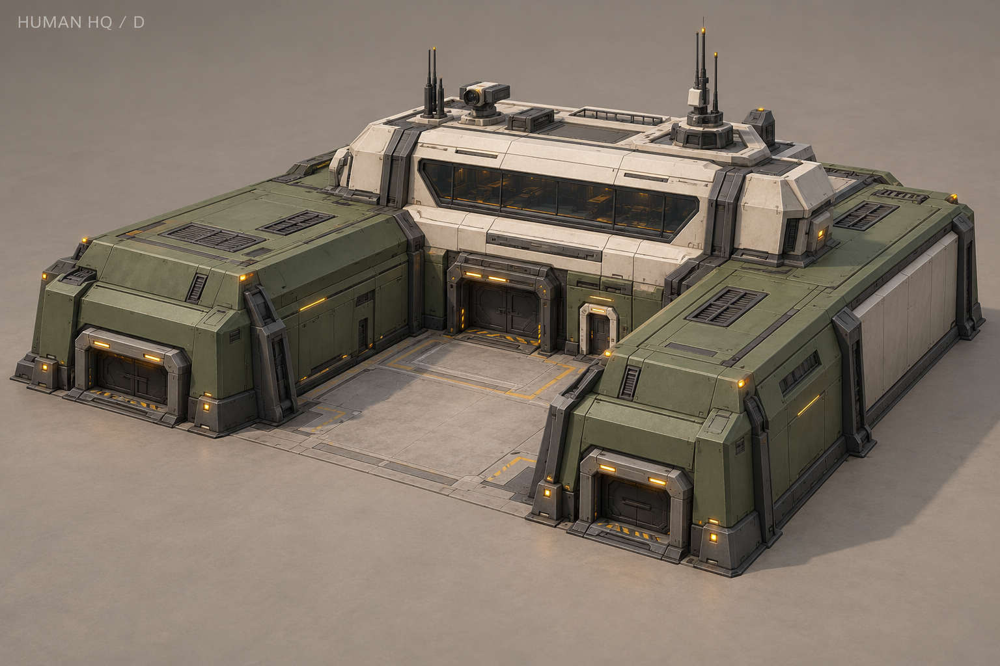
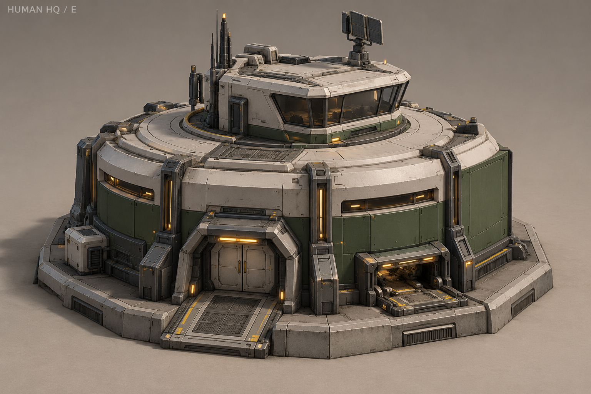
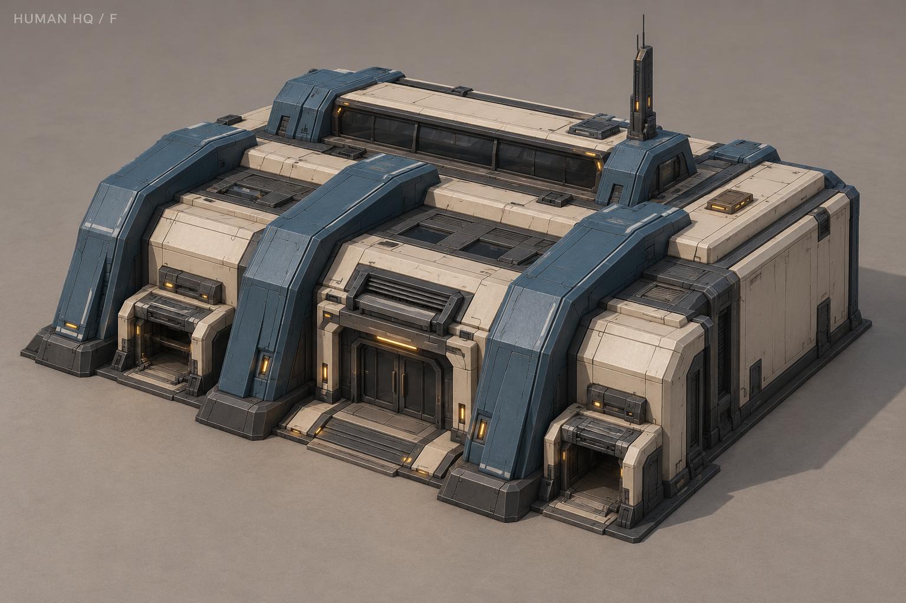
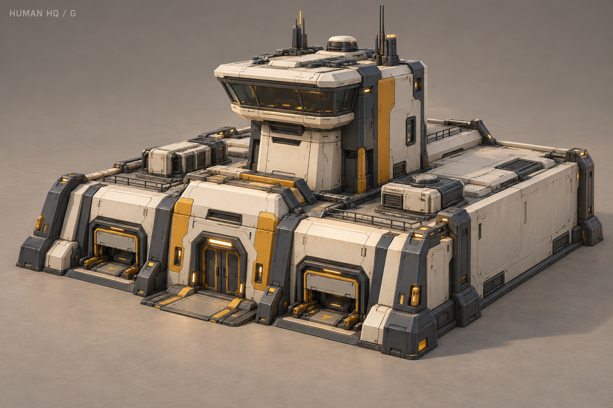
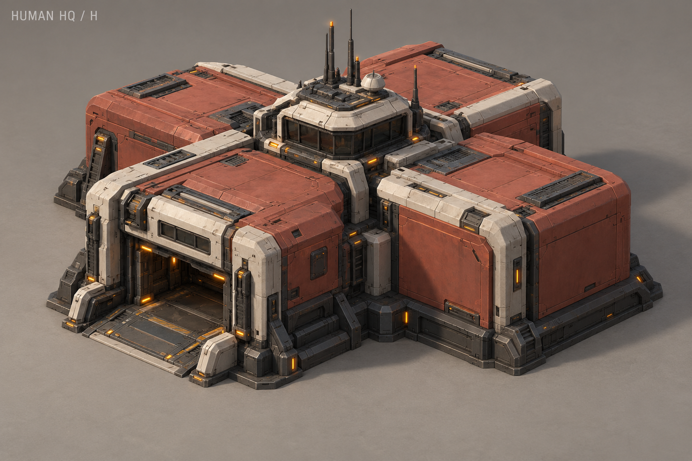

A — «Бастион»
Низкая крепость, угловые опоры, центральная рубка. Оливково-песочная гамма.

B — «Мостик»
Два корпуса и поднятый поперечный мостик. Сине-серый и светло-серый.

C — «Клин» · ВЫБРАН
Наклонная броня и центральный клин. Песочный, графит, приглушённый оранжевый.

D — «Двор»
Два крыла образуют приёмный двор. Оливковый и тёплый светлый.

E — «Ротонда»
Круглый корпус с верхней рубкой. Светло-серый и тёмно-зелёный.

F — «Хребет»
Выраженные силовые рёбра. Сине-серый каркас и песочные панели.

G — «Маяк»
Низкая база с короткой командной башней. Светлая броня, графит и охра.

H — «Кассеты»
Четыре модульных блока. Терракота, светлые стыки и графит.